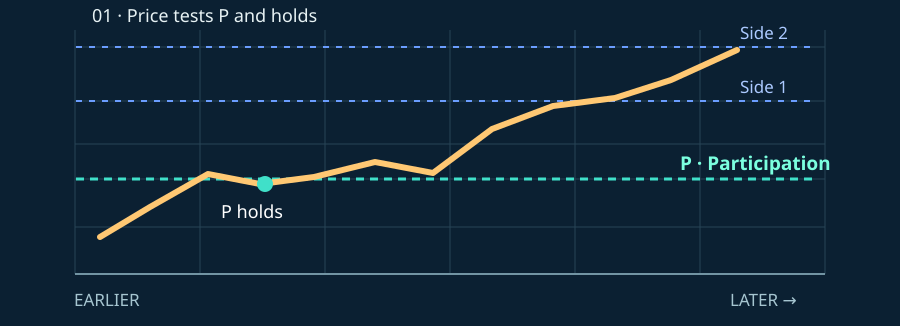
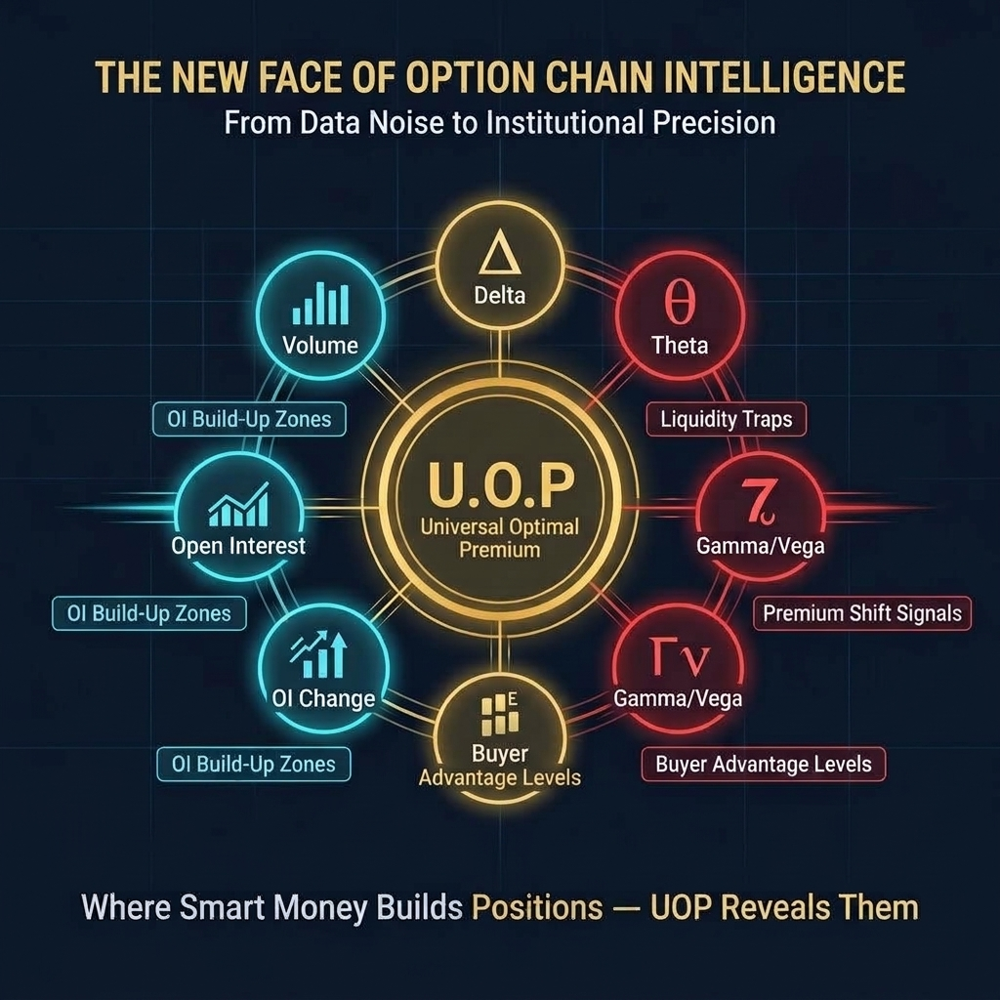
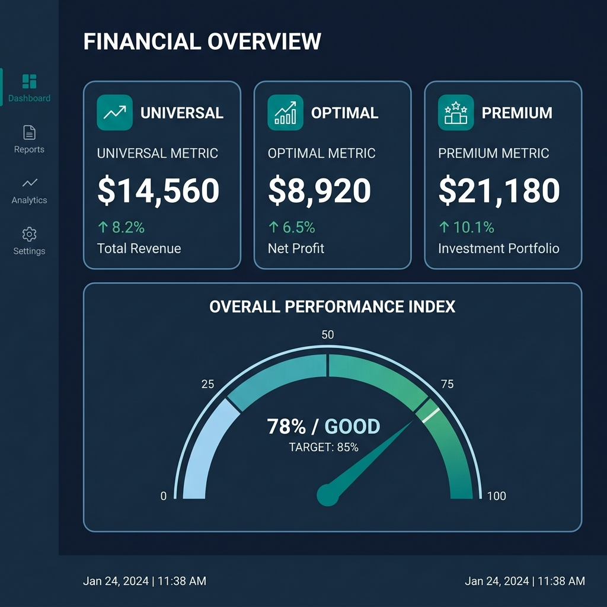
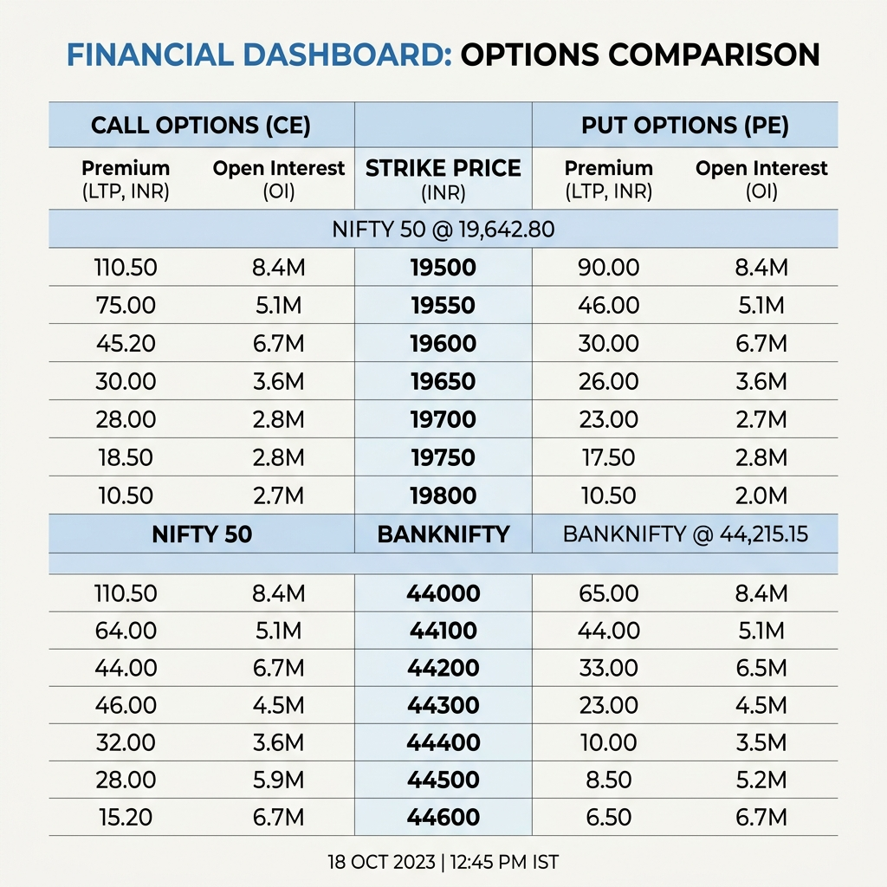
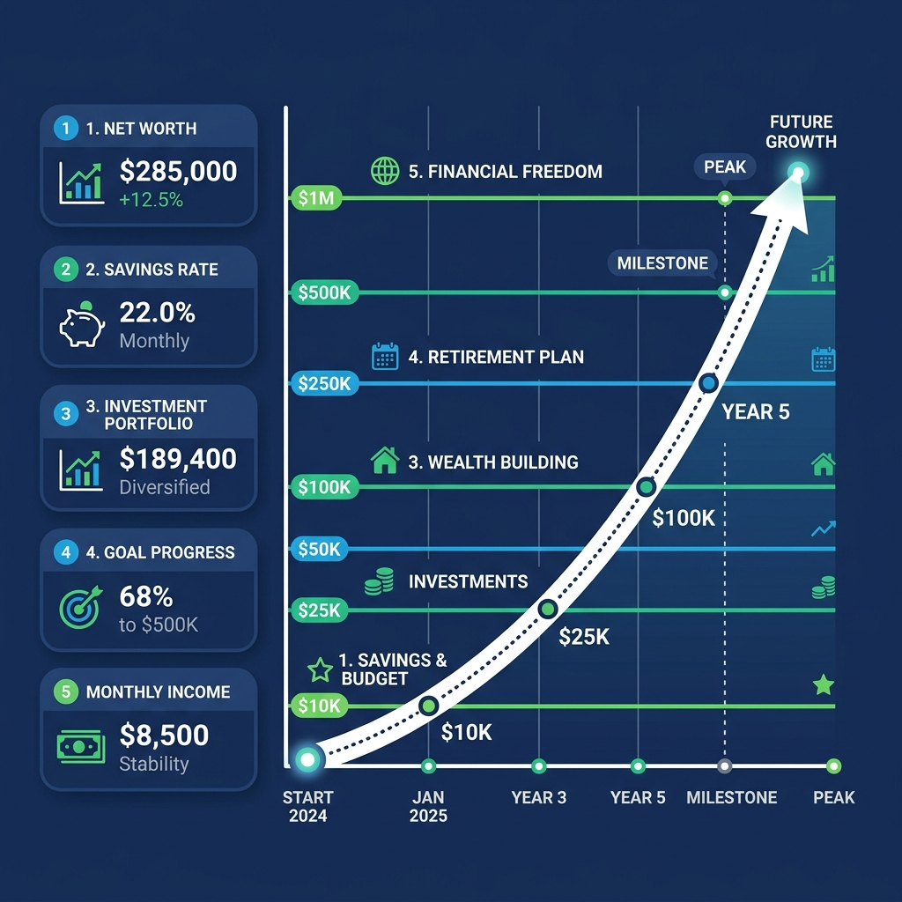
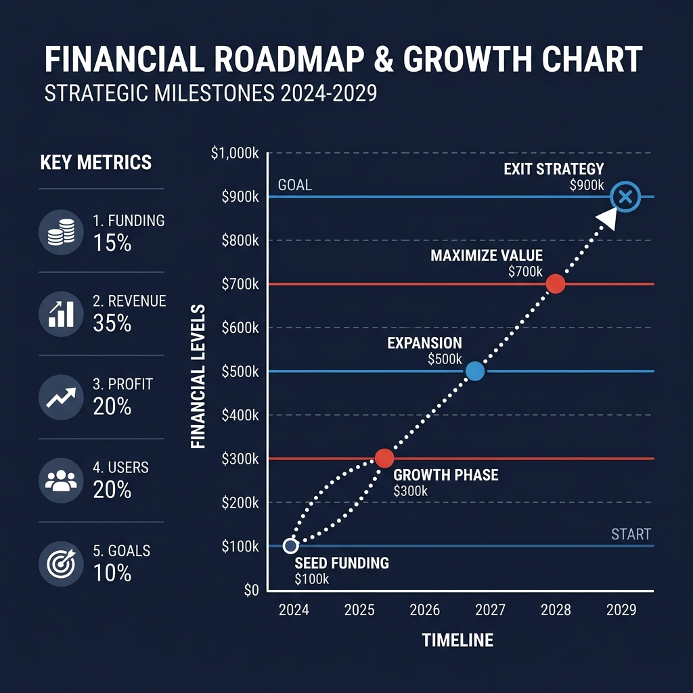
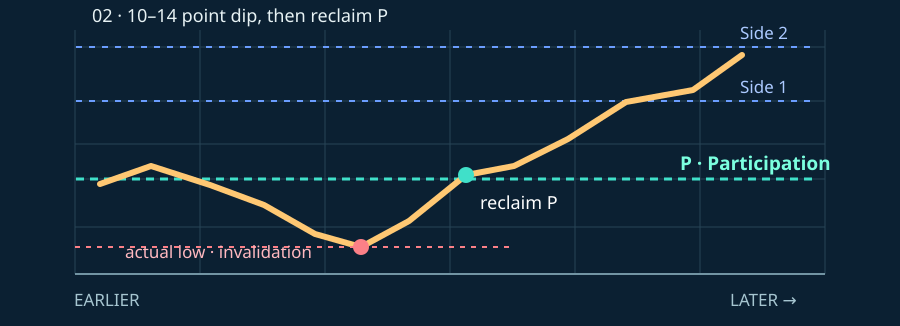
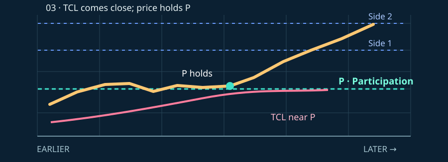
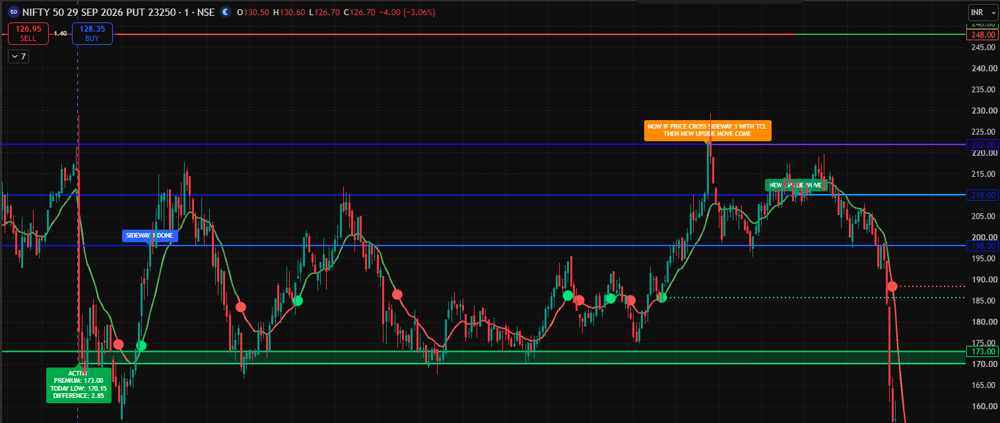

01
Direct Participation entry
The premium reaches and holds Participation while the buyer-side condition is present. The first areas to monitor are Side 1 and Side 2.
Check: defined entry · defined invalidation · first targets

The Institutional Participation System
Explore how the framework interprets option-chain, Greeks and positioning data as reference levels on an option premium.
Understand the system ↓A learning model for index option traders · no live trade signal
Conceptual order only. Your actual levels depend on the day’s calculation.
Many traders choose a NIFTY option by watching only NIFTY spot. U.O.P asks a different question: what levels matter on the option premium itself?
The framework combines readings from the option chain, option Greeks and observed positioning. It converts those inputs into three named reference levels for a chosen CE or PE strike.
Instead of following spot alone, the trader studies whether the chosen option premium holds, reclaims or loses Participation, and where TCL sits relative to that level.
Working premise: prior positions may influence the early session, sometimes into midday. The course uses those levels as a working map. Open interest cannot reveal a specific institution’s exact position or stop-loss, and the market can change direction at any time.

U.O.P names three calculated premium levels. Their purpose is to separate a possible buyer-side setup, a watch zone and a seller-side risk area.
A lower reference in the model. Compare premium action here with the other two levels; a breach may weaken the buyer-side idea.
Used with Participation to define the preferred observation or entry zone when the model’s buyer conditions are present.
The key activation line. A premium holding or reclaiming it is watched for the first upside move.
“Buyer safe” and “seller safe” are labels in this course, not a guarantee of safety. The actual strike, live premium, position size and exit rule still matter.


The first move seeks the sideways targets. A separate confirmation at Side 3 can open the second move toward the Main targets.
After Participation activates, the framework watches the premium move through Side 1 and Side 2. These are the first planned target areas.
If the premium crosses Side 3 with TCL confirmation, the model considers the Main upside targets. Main TG 2 is treated as an important profit-review area in the course.
“Sideways 1 and 2 are done. Consider a new upside move only if price crosses Side 3 with TCL confirmation.” The course’s “80% profit booking near Main TG 2” is a planning guideline, not a measured market-wide statistic or guaranteed exit.
The two supplied charts apply one teaching example to a 24050 call and a 24400 put. A CE and a PE each need their own live levels and confirmation; the matching sample numbers do not mean both trades are active together.
| Stage | Illustrative premium | Reading in the model |
|---|---|---|
| Universal / Optimal / P | 145.61 / 170.74 / 197.88 | Low between Optimal and P is watched; P is the start reference. |
| Side 1 / Side 2 / Side 3 | 225.01 / 237.58 / 250.14 | First move through the sideways targets. |
| Side 3 + TCL | Above 250.14 with confirmation | Gate for considering the second move. |
| Main 1 / Main 2 | 291.00 / 341.48 | Extended target areas; Main 2 is the poster’s profit-review zone. |
| Main 3 | Not specified precisely | Further continuation needs a fresh assessment. |


Reading discipline: every number above comes from the supplied historical graphics. The original posters use “Premium” for the level this lesson calls Participation. Check the current CE or PE option and its own calculated levels before drawing any conclusion.
Both start from the same level framework; Alpha Active is the stronger confirmation category used in the course.
The strike meets a standard Participation-based setup. Plan the first move, watch risk, and assess Side 3 separately before expecting an extended move.
Additional alignment in the course marks one CE or PE strike as a higher-conviction candidate that may remain active longer. The full identification rules are taught separately; it is never certain that a strike will continue.
The “7–8 times per month” frequency is an observation claimed by the framework; it is not a promised frequency and should be checked against recorded examples.
Each entry starts with the premium’s relationship to Participation. The three diagrams below show the premium path, Participation, Side 1 and Side 2. They are teaching illustrations, not live chart data. Use the actual chart low and TCL to check each condition.
The premium reaches and holds Participation while the buyer-side condition is present. The first areas to monitor are Side 1 and Side 2.
Check: defined entry · defined invalidation · first targets
The low slips roughly 10–14 premium points below Participation and then price crosses back above it. Use that actual low as the invalidation reference. The course accepts this setup only when the low-to-entry risk is within its 10–14 point limit.
Sequence: dip → reclaim P → recover the dip → assess Side 1 and Side 2
TCL approaches the Participation area while the premium remains above the level. If Participation holds and the premium bounces, watch for a move toward Side 1 and Side 2.
Check: TCL proximity · P holds · bounce follows through
Risk example, not a fixed trade instruction: a 10–14 point premium move can represent a different monetary risk for different lot sizes. A reclaim can fail, and no target is assured.
The uploaded NIFTY put chart shows the system’s lines and a TCL curve on a 1-minute premium chart. Open the image to read the labels at full size.

The chart marks a green reference near 173. This is where the course begins its buyer-side reading.
The blue lines show Side 1 around 198, Side 2 around 210 and Side 3 around 222 in this particular example.
The curve is the Trend Confirmation Line. For the second move, the course asks for a Side 3 cross with TCL agreement.
U.O.P is a teaching method developed by AlphaEdge Pro Academy. Option-chain open interest describes outstanding contracts; it does not identify a particular institution’s full position, stop-loss or next action. A level or TCL confirmation can fail.
Option trading carries substantial risk. Use observation and paper trading to understand the levels before risking money, and review SEBI’s derivatives education and NSE’s option chain. This page is for education, not an investment recommendation.